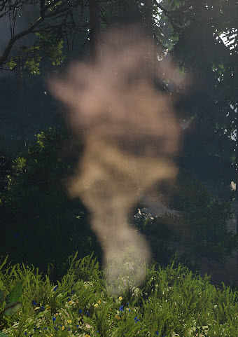
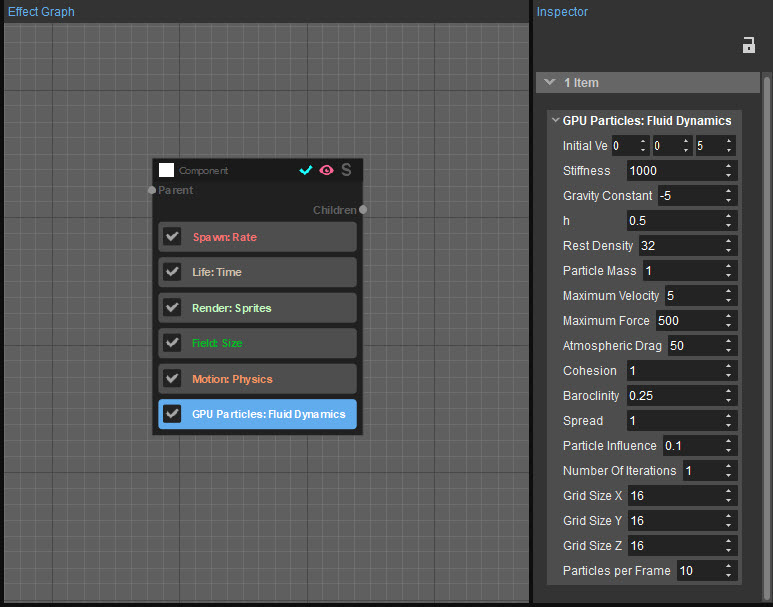
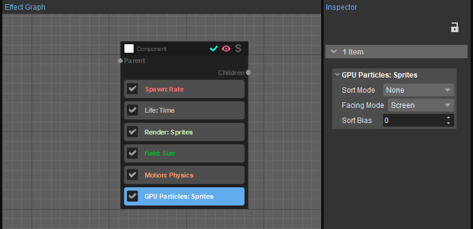

Обзор
Эта категория содержит функции, которые используются исключительно с частицами GPU.
Конвейер частиц на основе GPU реализует подмножество функций частиц CPU, предлагая при этом гораздо более высокую скорость для эффектов массивных частиц, таких как эффекты, подобные жидкости, и фрактальное движение.
В категории «Частицы» GPU доступны следующие параметры:
Система частиц CRYENGINE оптимизирована для полного использования возможностей CPU как для ПК, так и для ПК. Консольs и в большинстве случаев будет выполняться эффективно. Реализация эффекта частиц GPU была специально оптимизирована для обработки только очень большого количества частиц и добавляет значительные накладные расходы, если используется слишком часто с небольшим количеством частиц за время выполнения. Поэтому рекомендуется использовать функцию частиц GPU только при необходимости.
Столкновение
Эта функция добавляет возможность частицам GPU сталкиваться с геометрией рендеринга в буфере глубины сцены. Обратите внимание, что частицы будут сталкиваться только с видимой геометрией.
Недвижимость | Описание |
|---|---|
Смещение | Смещает глубину видимой поверхности. Заставляет частицы сталкиваться раньше или позже относительно поверхности на экране. |
Радиус | Аппроксимирует радиус частицы относительно экрана. |
Реституция | Влияет на упругость частицы, также известную как упругость при столкновении. Значение 0 означает, что частицы перестанут двигаться при любом столкновении. С другой стороны, значение 1 заставит частицы идеально отскакивать от сталкивающейся поверхности. |
GPU Гидродинамика
Это экспериментальная функция, доступная только для предварительной версии. Эта функция представляет собой пример потенциального будущего использования конвейера частиц CRYENGINE GPU, и окончательная версия может быть несовместима с текущей реализацией.

Пример эффекта GPU Fluid Dynamics
Эта функция позволяет пользователям добавлять к компоненту моделирование гидродинамики гладких частиц (SPH). Моделирование будет проводиться с использованием частиц жидкости, которые не обрабатываются самой системой частиц. Частицы жидкости используются для создания и развития поля скоростей, которое можно отбирать для определения скоростей частиц.
Когда движок запущен и доступна функция гидродинамики GPU, будет активирован отладочный рисунок и будут визуализированы границы структуры ускорения, а также положения частиц моделирования SPH. Имейте в виду, что это ухудшит производительность моделирования.
Чтобы деактивировать отладочный рисунок и включить максимальную производительность, используйте CVar r_GpuPhysicsFluidDynamicsDebug=0.
Назначение значений GPU Fluid Dynamics эффекту

Свойства | Описание |
|---|---|
Начальная скорость | Задает начальное значение скорости частиц жидкости при их появлении. |
Жесткость | Задает жесткость при решении ограничения давления. |
Гравитационная постоянная | Определяет силу гравитации. При установке отрицательных значений имитируется плавучесть. |
час | Определяет радиус влияния частиц жидкости. Частицы SPH имеют массовое распределение, основанное на сглаживающем ядре, и этот параметр определяет радиус сглаживающего ядра. |
Плотность покоя | Указывает значение плотности, которое используется решателем давления для любой заданной частицы SPH. |
Масса частицы | Указывает общую массу, переносимую одной частицей SPH. |
Максимальная скорость | Определяет скорость каждой частицы SPH. Частицы фиксируются на этом значении, чтобы сделать симуляцию более стабильной. |
Максимальная сила | Определяет силу, приложенную к каждой частице SPH. Частицы фиксируются на этом значении, чтобы сделать симуляцию более стабильной. |
Атмосферное сопротивление | Определяет величину атмосферного сопротивления, применяемую к частицам SPH, у которых нет соседей на границах области моделирования, для имитации эффекта более крупной области, заполненной газом. |
Сплоченность | Контролирует поверхностное натяжение. |
бароклинность | Создает турбулентность, когда столб частиц поднимается вверх. |
Распространение | Определяет радиус, в котором частицы SPH создаются вокруг позиции эмиттера. |
Влияние частиц | Управляет сопротивлением, с которым частицы переносятся по полю жидкости. |
Количество итераций | Указывает количество итераций решателя, необходимое для каждого кадра. |
Размер сетки X, Размер сетки Y, Размер сетки Z | Указывает количество ячеек сетки ускорения в каждом измерении. |
Частиц на кадр | Указывает количество частиц моделирования жидкости, которые будут создаваться на кадр. |
CVar/Команда | Описание | Комментарий и примеры |
|---|---|---|
r_GpuPhysicsFluidDynamicsDebug | Рисует GPU частицы жидкости в целях отладки. Это резко снижает производительность моделирования. значение по умолчанию этой функции является 1. | 0 — запрещает получение любой отладочной информации. 1 — извлекает границы структуры ускорения и положения частиц жидкости. |
Спрайты
Эта функция заставляет оценивать весь компонент на GPU, а не на CPU. GPU гораздо лучше подходит для обработки большого количества частиц, чем CPU. Используя
В зависимости от типа игры и производительности GPU в игру может быть введено более миллиона частиц. В настоящее время пользовательский интерфейс ограничивает максимальное количество частиц GPU двумя миллионами. После оплаты первоначальных затрат, связанных с инициализацией и запуском конвейера GPU, инвестиции быстро окупаются при обработке большого количества частиц. Это особенно актуально для тяжелых функций, таких как компонент «Движение: физика»; Кроме того, Simplex или Simplex Curl Noise получают большую выгоду от чистой вычислительной мощности, доступной на современном GPU. С другой стороны, конвейер GPU более ограничен в функциональности.
Более подробную информацию о том, как работают частицы GPU, см. GPU Поддержка.
Дополнительную информацию о разнице между компонентом и средой выполнения см. Ключевые понятия.

Свойства | Описание |
|---|---|
Режим сортировки | Определяет тип сортировки, который будет использоваться для частиц. Сортировка всегда применяется в каждом кадре. Это важно для полупрозрачных частиц, поскольку порядок их рендеринга влияет на конечное визуальное качество. Если сортировка не применяется, частицы могут начать случайным образом появляться друг на друге; это связано с тем, как частицы хранятся в памяти.
|
Режим лицом | Указывает, в какую сторону обращены частицы.
|
Масштаб оси | Действует только тогда, когда Режим лицом установлено на Скорость. Указывает размер частицы для ее вектора скорости, тогда как высота частицы всегда ограничивается ее размером. Рекомендуемое значение этого свойства — 0,016 (что составляет 1/60); это заставляет спрайт вести себя как размытие в движении. |
Сортировка смещения | Определяет порядок сортировки компонентов, который всегда основан на расстоянии до камеры излучателя, которому они принадлежат. Хотя режим сортировки определяет сортировку спрайтов внутри компонента, спрайты не сортируются по другим компонентам. Это смещение добавляется к этому расстоянию, чтобы изменить порядок компонента относительно других компонентов. Например, он может заставить частицы огня всегда отображаться поверх дыма. |